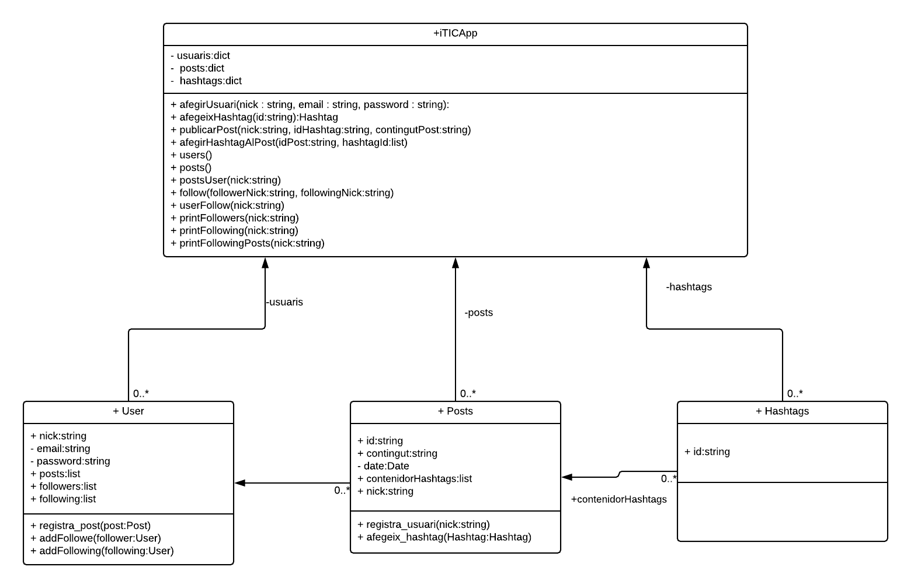

Pràctica 2: Gestió de la Xarxa Social iTICApp¶
| Author: | David Marquez i Ferran Godoy |
|---|---|
| Date: | 11/03/2018 |
Objectius¶
L’objectiu d’aquesta pràctica és prendre contacte amb els programes estructurats en base a classes d’objectes. El context del projecte se sitúa en una xarxa social, en el marc d’un projecte de recerca sobre els seus usuaris i els posts que publiquen a la xarxa.
Temps dedicat a les tasques¶
| Tasca | David M. | Ferran G. | Total |
|---|---|---|---|
| T1 | 10min | 10min | 20min |
| T2 | 20min | 10min | 30min |
| T3 | 0min | 1h | 1h |
| T4 | 0min | 10min | 10min |
| T5 | 1:30h | 30min | 2h |
| T6 | 30min | 30min | 1h |
| T7 | 30min | 30min | 1h |
| T8 | 10min | 0min | 10min |
| T9 | 2h | 2h | 4h |
| T10 | 1h | 1h | 2h |
| Total | 6h10min | 6h | 12h10min |
Toc personal¶
El nostre toc personal ha estat afegir la funcionalitat de followers i following, que permet que els usuaris segueixin a altres usuaris.
A més a més hem afegit al intèrpret varies funcions relacionades amb la gestió de followers i following (printejar, veure els posts ordenats cronològicament invers penjats per els usuaris que segueix un usuari, etc. ).
També hem posat una funció help que descriu totes les funcionalitats del intèrpret i com cridar-les.
Per últim hem afegit la funcionalitat d’afegir vairis hashtags a un post després de crear-lo.
UML resultant (toc personal inclòs)¶
El UML resultant amb el toc personal:
